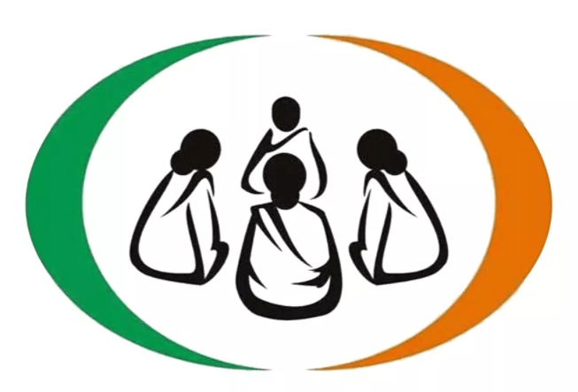

Dwcra Self-Help Group
Introduction
Welcome to the DWCRA website. Here is an introduction to the DWCRA group. Development of Women and Children in Rural Areas (DWCRA), a sub-scheme of IRDP, introduced in 1983, has become a very important program throughout the country, especially in the state of Andhra Pradesh. UNICEF introduced the DWCRA program to strengthen women's poverty alleviation programs.
Mahila Scheme

